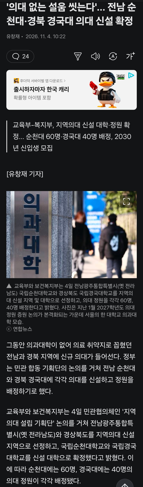

의대와 나머지 학과 수준차이가 어마어마 하겠네 ㅋㅋ

의대와 나머지 학과 수준차이가 어마어마 하겠네 ㅋㅋ
(의료기기 영업사원들에게 수술을 받으며)
영업사원이 공부 더 잘했나보네
이런 뇌에 니 몸 맡기는건 안 불안하냐
수능 하나 더 틀렸다고 공부를 못하는 애가 되는건 아냐
공부랑 손재주는 또 다르다
저 의대가 생긴다고 공부못하는 애들이 갈수 있게된거라고 생각하는거임?
제주도에도 하나 더 해줘 ㅠㅠ
왜 우린 안챙겨주는거냐
제주도 하나 있어야 되긴하겠네...
제주도는 서울 접근성이 오히려 높아서 더 안생기는거일지도
제주대 의대 있잖아. 의약수 있는데
서울 집값 잡으라고 지방에 인프라 만들라고 하지만 막상 만든다고 하면 의미없는 ㅈㄹ 이라고 하네 ㅋㅋㅋㅋ
경국? ? ?
전신 국립안동대학교
의대유치가 오랜 숙원사업이긴 했었지
경국대 이름 너무 짜쳐 차라리 안동대가 낫지
대전대학교도 한의대 원툴이잖아 ㅋㅋ
원래도 의대원툴 대학 많긴 했어서
경북대 오타가 아니라 경국대라는데가 있네
의대를 왜 늘림 정원을 안늘렸짢아
나는 공부 못하는 의사에게 내 몸을 맡길순 없어